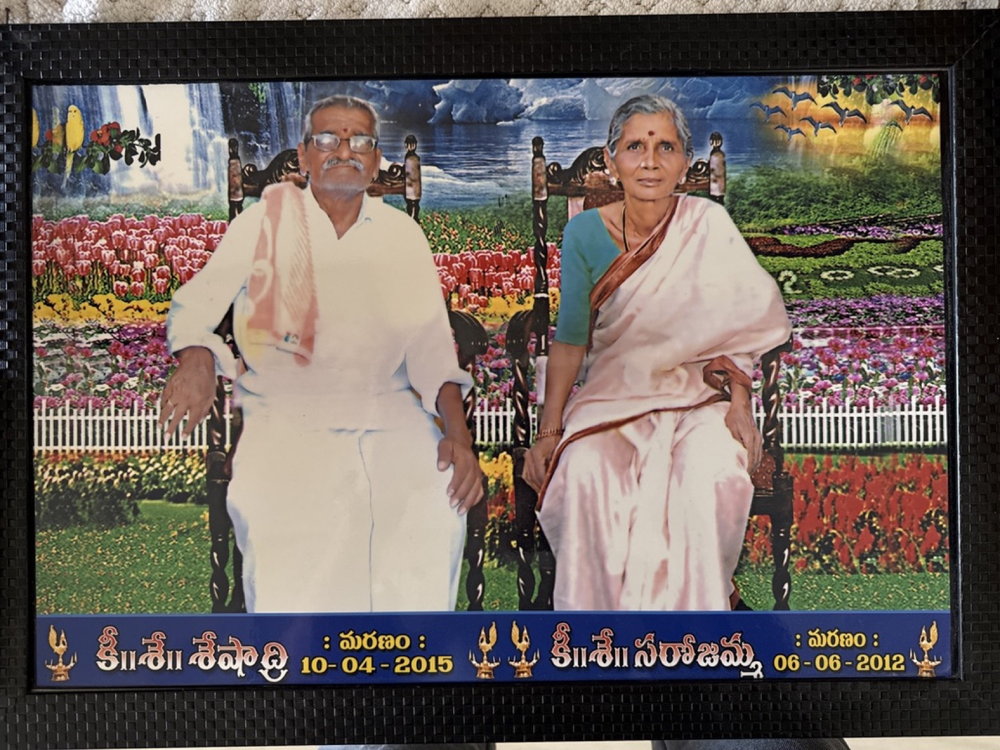
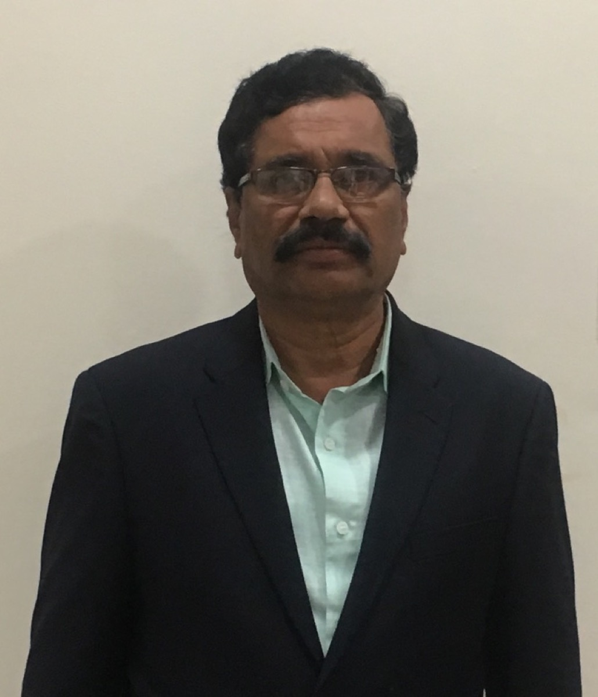
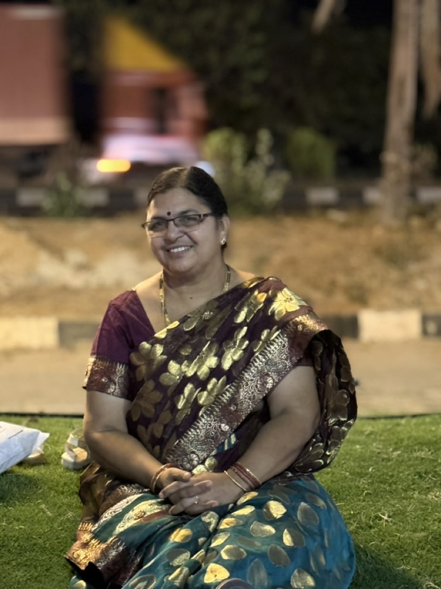

Learning
Scholarships, academic support, mentoring and educational opportunities for people who may otherwise be left behind.
We are building a practical, open-handed way to support learning, opportunity and community welfare in Wanaparthy.
The trust was created to make education more reachable, build practical capability and stand with families facing difficult costs.
Scholarships, academic support, mentoring and educational opportunities for people who may otherwise be left behind.
Vocational training and useful skills that support employment, enterprise and greater independence.
Health awareness and carefully governed assistance when there are people, funds and permissions to deliver it responsibly.
Programmes will open only after their funding, eligibility and operating process are ready. No service is being advertised here as currently available.

Sri Kamatham Seshadri was our grandfather. He is no longer with us. We carry his name not to create a legend, but to give the work a standard: be useful, be fair, and remain accountable to the people it is meant to serve.
The trust is guided by family members who accept responsibility for its decisions, records and conduct.


Questions about the trust, its future work or how to stay informed are welcome. This page does not accept donations or applications.
H. No. 42-242/11/8
New Town Colony
Wanaparthy, Telangana 509103
Messages are received by the trust’s official mailbox. Please do not send Aadhaar, bank details or confidential medical information through this form or email.